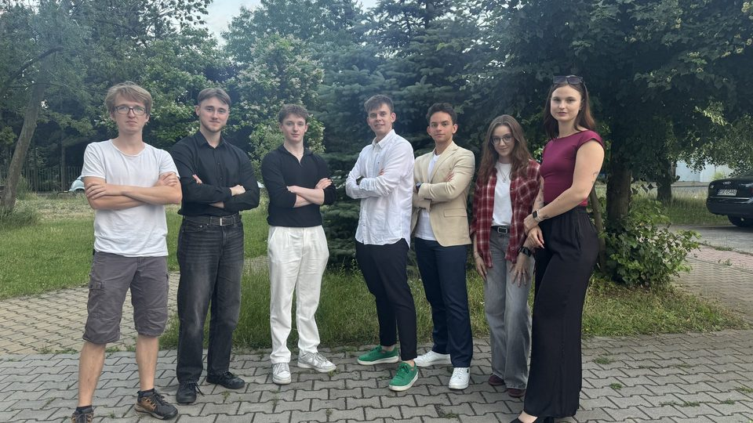

O partnerze
Qubit to młode koło naukowe skupione na algorytmach kwantowych, działające od stycznia. W momencie rozpoczęcia współpracy liczyło około 30 aktywnych członków, a na prelekcje przychodziło jeszcze około 40 wolnych słuchaczy. Celem koła jest nauczanie — członkowie sekcji edukacyjnej prowadzą prelekcje dla reszty koła, zastępując wykładowców.
Wyzwanie
Koło działało bez spisanej struktury organizacyjnej i bez wypracowanej kultury organizacyjnej. Zarząd liczył trzy osoby, przy czym funkcja skarbnika pozostawała nieobsadzona. Sekcje rozwijały się bardzo nierówno: marketing miał jedną osobę i nie działał, a sekcja informatyzacji nie miała czym się zajmować.
Członkowie spotykali się właściwie tylko na prelekcjach, co nie budowało poczucia wspólnoty — jak ujęto na spotkaniu diagnostycznym: „słaba komunikacja, brak przynależności, brak obowiązku, brak świadomości co jest ważne w kole, a co nie”. Otwartą kwestią pozostawało też, czy wolni słuchacze powinni w ogóle liczyć się jako członkowie koła.
Co zrobiliśmy
Zaprojektowaliśmy dla Qubitu pierwszą spisaną strukturę organizacyjną, rozpisaliśmy obowiązki każdej roli w zarządzie i w sekcjach, ustaliliśmy rytm spotkań oraz przygotowaliśmy instrukcję wdrożenia zmian — z naciskiem na to, że sama prezentacja pomysłu niczego nie zmieni, jeśli ustalenia nie zostaną spisane.
Przebieg współpracy
30.05.2025
Spotkanie diagnostyczne
Rozpoznanie struktury koła, sekcji i realnych problemów; lista rzeczy do wypracowania.
czerwiec 2025
Spotkanie końcowe
Prezentacja pełnej propozycji: struktura, zakresy obowiązków, rytm spotkań i plan wdrożenia zmian.
Rezultat
Qubit otrzymał kompletną propozycję struktury organizacyjnej opartą na dwóch wymiarach. Pionowo — trzy stałe sekcje: PR, InfoLog i Szkoła, każda z opiekunem z zarządu; sekcja jest „codziennym zespołem” członka, w którym rozwija umiejętności na stałe. Poziomo — projekty łączące osoby z różnych sekcji pod kierownikiem projektu.
Do tego rozpisano obowiązki każdej roli w zarządzie i ustalono rytm spotkań: ogólne co dwa tygodnie z agendą i sprawdzaniem obecności, sekcyjne po 15–30 minut, projektowe według uznania koordynatora. Całość zamknięto rekomendacjami — jak najwięcej integracji, tworzenie know-how w każdej sekcji, monitorowanie aktywności członków przez koordynatorów i uruchamianie większej liczby projektów, żeby uniknąć przestojów.
Narzędzia i metodyki
- Struktura macierzowa
- Opisy ról i zakresów obowiązków
- Zarządzanie zmianą
- Know-how
- Jira
- Notion
- GitHub